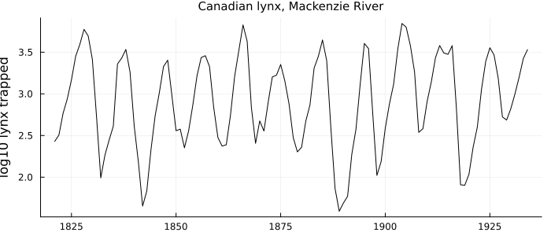
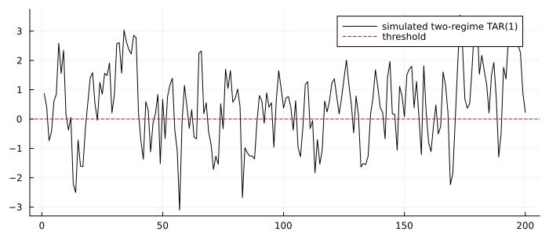
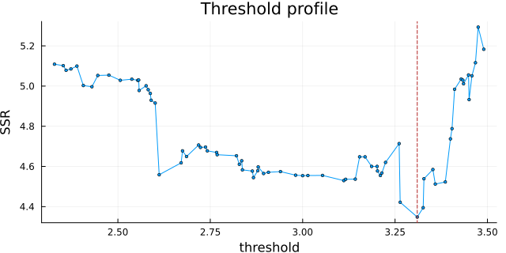
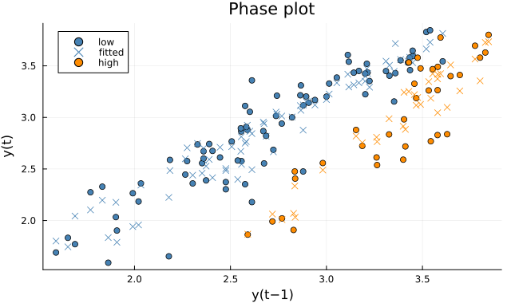
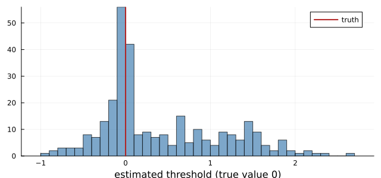
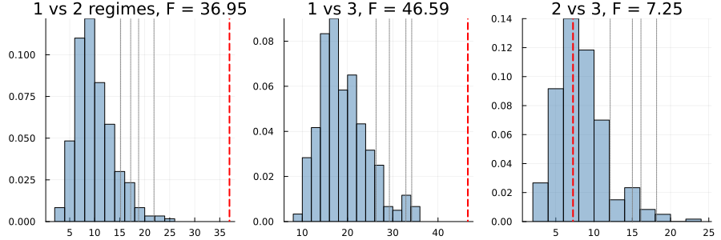
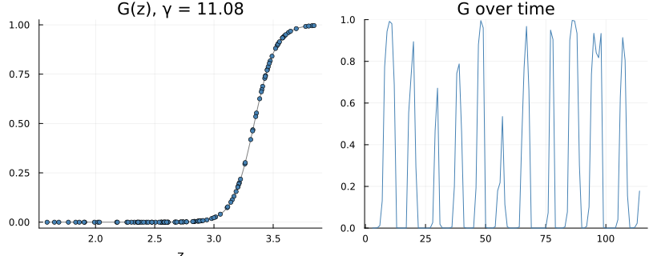
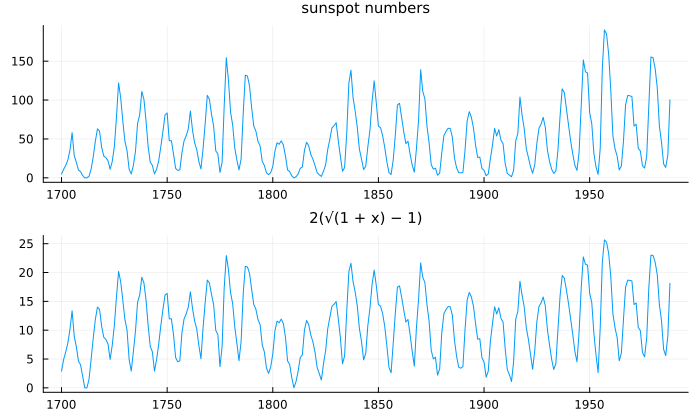

A Different Model on Each Side of a Line
using TSAnalytics, Plots, DelimitedFiles, Statistics, Random
lynx = readdlm(TSAnalytics.LYNX, ',', skipstart = 1)[:, 2]
y = log10.(lynx)
rises = count(diff(y) .> 0); falls = count(diff(y) .< 0)
println("lynx trappings 1821-1934: ", rises, " years up, ", falls, " years down;",
" mean rise ", round(mean(filter(>(0), diff(y))), digits = 3),
", mean fall ", round(mean(filter(<(0), diff(y))), digits = 3), " (log10)")lynx trappings 1821-1934: 70 years up, 43 years down; mean rise 0.244, mean fall -0.372 (log10)plot(1821:1934, y; color = :black, label = "", ylabel = "log10 lynx trapped", size = (700, 300),
title = "Canadian lynx, Mackenzie River", titlefontsize = 10)
The lynx cycle — the most famous in ecology — rises slowly and falls fast. Over the century it rose in more years than it fell, by smaller amounts each time. No linear autoregression can do that: an AR model's dynamics are the same going up as coming down, so its cycles are symmetric. Asymmetry needs a model whose dynamics depend on where the series is. Chapter 55 let a hidden chain choose the regime; this chapter lets the series' own past choose it, by crossing a threshold.
The model
A self-exciting threshold autoregression (SETAR) fits one autoregression when a lagged value is at or below a threshold and another when it is above:
\[y_t = \begin{cases} \phi_{L,0} + \sum_j \phi_{L,j}\, y_{t-j} + \varepsilon_t & y_{t-d} \le c \\[2pt] \phi_{H,0} + \sum_j \phi_{H,j}\, y_{t-j} + \varepsilon_t & y_{t-d} > c \end{cases}\]
"Self-exciting" because the variable that switches the regime is the series itself, d periods back. Tong & Lim (1980) introduced it, on these lynx; Tsay (2010, §4.1.2) and Shumway & Stoffer (2017, §5.4, printed pp. 261–265, PDF 271–275) are the textbook treatments.
The package follows R's tsDyn: thDelay = d means the threshold variable is y_{t−(d+1)}, and the low regime is z ≤ c, inclusive. Tsay names the threshold γ_j, r₁ and γ₁, γ₂ in different chapters, and his regime boundaries are inclusive on different sides in different chapters. His Eq. (4.9) is also printed with minus signs before the lag terms that contradict every other SETAR equation in the book; the form above is the one his Eqs. (4.8) and (4.11) use.
A simulated example shows what two regimes do. Below zero the series is pulled up gently; above it, it is a near random walk drifting down:
rng = MersenneTwister(56)
function simulate_tar(n, rng)
x = zeros(n + 100)
for t in 2:length(x)
x[t] = x[t - 1] <= 0 ? 0.3 + 0.5x[t - 1] + randn(rng) : -0.2 + 0.9x[t - 1] + randn(rng)
end
return x[101:end]
end
xs = simulate_tar(200, rng)
plot(xs; color = :black, label = "simulated two-regime TAR(1)", size = (700, 300), legend = :topright)
hline!([0]; color = :firebrick, linestyle = :dash, label = "threshold")
Long slow descents from above, quick recoveries from below: the asymmetry is built in, and no single set of AR coefficients produces it.
Fitting the lynx
The threshold is not known. The standard estimator tries every observed value of the threshold variable in the middle of its range (here the central 70%) and keeps the one whose two least-squares fits leave the smallest total sum of squares:
m = fit_setar(y, 2; thDelay = 1, warn = false)SETAR model, 2 regimes, m = 2, thDelay = 1 (z_t = y_{t-2}), rows = 112
threshold: 3.3100557377508912 (searched)
const.L 0.5884369293 se 0.144652
phiL.1 1.264279284 se 0.065869
phiL.2 -0.4284292116 se 0.0782145
const.H 1.165691948 se 0.884837
phiH.1 1.59925407 se 0.109989
phiH.2 -1.01157549 se 0.2675
regime sizes: 78 / 34
SSR = 4.3481912792 AIC = -349.8588 (no standard error for the threshold: its distribution is non-standard)plot(threshold_profile(m); size = (640, 320))
The profile is ragged and its minimum sharp. That raggedness is the point: the sum of squares jumps whenever a candidate moves an observation from one regime to the other, so it is a step function of the threshold, not a smooth curve with a curvature to read a standard error from.
plot(threshold_phase_plot(m); size = (640, 380))
The phase plot — this year against last — is Shumway & Stoffer's diagnostic of choice (their Fig. 5.8 draws it for influenza mortality): the two regimes are two different lines through the cloud. In the high regime the second lag's coefficient is −1.01, so high values two years back pull hard downwards: the crash.
The threshold has no standard error
The threshold estimate's sampling distribution is not normal, and not even centred on the truth in a sample of ordinary size (Hansen 2000). Simulate the TAR above two hundred observations at a time, three hundred times, and estimate the threshold, whose true value is 0:
ths = [fit_setar(simulate_tar(200, rng), 1; warn = false).thresholds[1] for _ in 1:300]
println("median ", round(median(ths), digits = 3), ", mean ", round(mean(ths), digits = 3),
", 5% and 95% points ", round.(quantile(ths, [0.05, 0.95]), digits = 2),
", skewness ", round(mean(((ths .- mean(ths)) ./ std(ths)) .^ 3), digits = 2))median 0.071, mean 0.406, 5% and 95% points [-0.45, 1.76], skewness 0.78histogram(ths; bins = 40, color = :steelblue, alpha = 0.7, label = "", size = (640, 300),
xlabel = "estimated threshold (true value 0)")
vline!([0]; color = :firebrick, linewidth = 2, label = "truth")
Median near the truth, mean pulled well to the right, a long tail on one side: a mean ± 1.96 standard errors interval would be wrong in both directions at once. fit_setar therefore reports no standard error for the threshold, where R's tsDyn reports a zero. The right tool is Hansen's likelihood-ratio confidence set, which neither reference implements and which Chapter 57 lists as not yet built.
Is there a threshold?
Testing "one regime" against "two" has the same difficulty in another form: under the null hypothesis of one regime the threshold does not exist, so it cannot be estimated, and the usual likelihood-ratio distribution theory fails (the Davies problem). Hansen (1999) bootstraps the null distribution instead:
t = setar_test(y, 2; thDelay = 0:1, nboot = 300, rng = MersenneTwister(1))Hansen (1999) threshold tests, bootstrap with 300 replications, rows = 112
SSR: AR = 5.782580842, SETAR(1) = 4.348191279, SETAR(2) = 4.083800414
1 vs 2: F = 36.9468, bootstrap p = 0.0
1 vs 3: F = 46.5898, bootstrap p = 0.0
2 vs 3: F = 7.251, bootstrap p = 0.5933
(no asymptotic p-value: the null distribution is non-standard)plot(t; size = (900, 300))
Linearity is rejected decisively — the observed statistic is far beyond every bootstrap draw — and a third regime adds nothing significant. The three panels are distributions simulated under each null, not χ² curves; there is no asymptotic distribution to draw.
A smooth switch
A threshold is a step. The logistic smooth-transition autoregression (LSTAR) replaces it with a curve, G(z) = 1 / (1 + exp(−γ(z − c))), which moves the series gradually between regimes as z crosses c:
\[y_t = X_t' \phi_L + (X_t' \phi_H)\, G(y_{t-d}) + \varepsilon_t\]
The form is additive: the high regime's coefficients are φ_L + φ_H, so φ_H is an increment. Tsay writes exactly this (2010, Eq. 4.15, printed p. 184, PDF 211) and, uniquely among the textbooks, spells out the translation to the high regime's coefficients on the next page. It matters, because the obvious alternative — a weighted average of two autoregressions, (1 − G) X′φ_L + G X′φ_H — is a different model:
l = fit_lstar(y, 2; thDelay = 1)
Y = y[3:end]; X = hcat(ones(112), y[2:113], y[1:112]); z = y[1:112]
G = 1 ./ (1 .+ exp.(-l.gamma .* (z .- l.th)))
additive = sum(abs2, Y .- X * l.phiL .- (X * l.phiH) .* G)
convex = sum(abs2, Y .- (1 .- G) .* (X * l.phiL) .- G .* (X * l.phiH))
println("sum of squares at the estimates, additive form: ", round(additive, digits = 4),
"; read as a weighted average: ", round(convex, digits = 2),
" (", round(Int, convex / additive), " times worse)")sum of squares at the estimates, additive form: 4.3376; read as a weighted average: 289.92 (67 times worse)plot(transition_plot(l); size = (820, 320))
γ ≈ 11 on the raw log10 scale — the transition takes about a third of a unit, nearly a step, so the smooth model confirms the abrupt one rather than replacing it. Tsay writes the slope as a scale s in (z − c)/s, so his s is about 1/γ: a second way the same model can print a different number.
Sunspots, Hansen's way
Hansen (1999) applied the test to the annual sunspot numbers after a square-root transformation, 2(√(1 + x) − 1), which stabilises the variance much as a logarithm would (Montgomery, Jennings & Kulahci 2008, Fig. 2.16, draw the raw and logged sunspots side by side to make the same point):
s = readdlm(TSAnalytics.SUNSPOTS_YEAR, ',', skipstart = 1)[:, 2]
sun = 2 .* (sqrt.(1 .+ s) .- 1)
ms = fit_setar(sun, 11; thDelay = 1, warn = false)
println("threshold ", ms.thresholds[1], " regime sizes ", [count(==(r), ms.regime) for r in 1:2])threshold 7.423375191511797 regime sizes [86, 192]plot(plot(1700:1988, s; label = "", title = "sunspot numbers", titlefontsize = 10),
plot(1700:1988, sun; label = "", title = "2(√(1 + x) − 1)", titlefontsize = 10);
layout = (2, 1), size = (700, 420))
An AR(11) in each regime — the eleven-year cycle — with the threshold found at 7.42 on the transformed scale, the same value, to every digit, that tsDyn finds.
tsDyn divides each SETAR's residual sum of squares by the full series length less the slopes — counting observations the regression never used — and computes AIC on that length. Its own linear AR uses a third denominator, so a SETAR and the AR it is tested against carry inconsistent standard errors in the same package. It also builds its threshold grid from fractional indices that R truncates, skipping candidates (74 of 75 on lynx). fit_setar uses the rows the regression used, searches every candidate, and keeps tsDyn's conventions in se_tsdyn and tsdyn_ic so its numbers can be reproduced exactly — which they are, to 1e-10.
Refitting two least-squares regressions at each of hundreds of candidate thresholds is wasteful: moving the threshold past one observation moves exactly one row from one regime to the other. The search therefore keeps each regime's cross-product matrices and updates them by a rank-one BLAS.ger! as each candidate is crossed, solving a small system at each step — and a test checks that this incremental search and a naive refit at every candidate agree to the last digit of the chosen threshold.
Summary
- A threshold autoregression fits different dynamics on either side of a threshold on the series' own past, which lets cycles rise and fall differently.
- The threshold is found by grid search; its sampling distribution is skewed and non-normal, so no ordinary standard error is reported.
- Linearity is tested by bootstrap, because the threshold does not exist under the null.
- The LSTAR is additive, and reading it as a weighted average gives a model 67 times worse on the lynx.
See also
- Manual: Threshold and Smooth-Transition Models
- Chapter 55 — regimes from a hidden chain
- Chapter 57 — what is still missing, including the threshold's confidence set